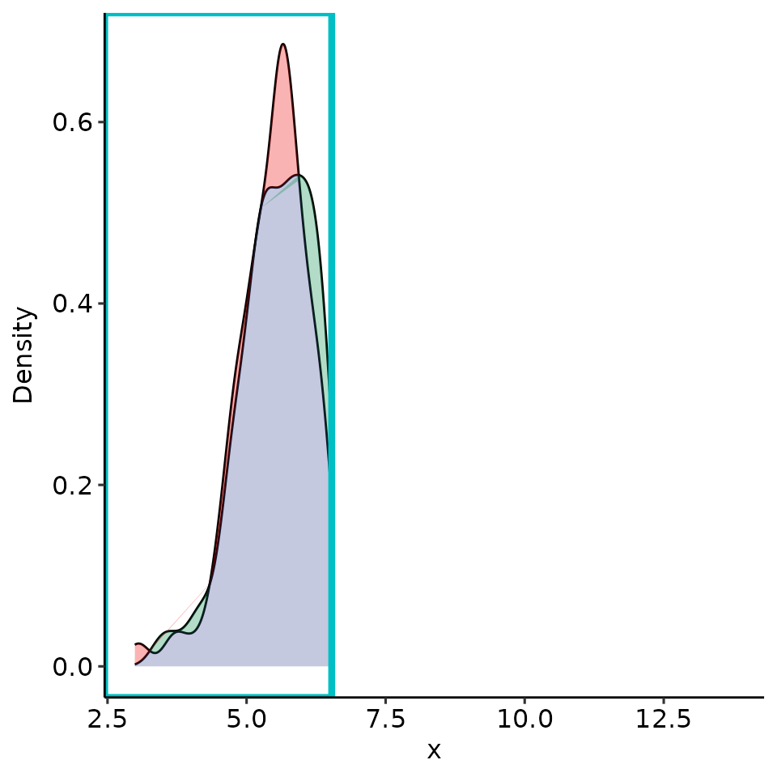
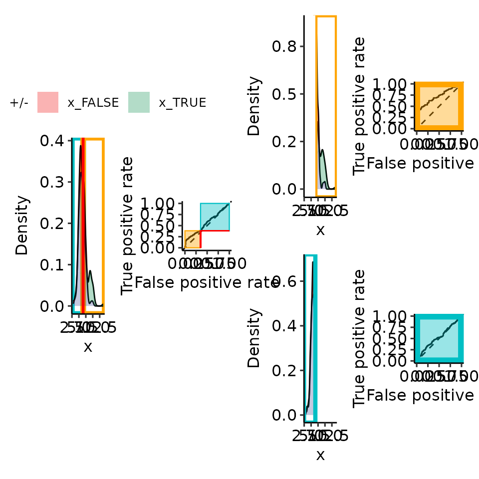

Paper 09: rROC concept
paper_09_cartoon_fig2.Rmd
options(warn = 1)
library(restrictedROC)
current_sim <- function(dists) {
# restrictedROC::sim(dists, do_melt = FALSE, length.out = 2500)
restrictedROC::sim(dists, do_melt = FALSE, length.out = 250)
}
set.seed(129387)
simdata <- current_sim(
list(
"Positive" = function(length.out) {
unif <- runif(length.out)
vapply(unif, function(x) {
if (x > .2) {
rnorm(1, mean = 6, sd = 1)
} else {
rnorm(1, mean = 9, sd = 1)
}
}, numeric(1))
},
"Negative" = function(length.out) {
unif <- runif(length.out)
vapply(unif, function(x) {
if (x > .02) {
rnorm(1, mean = 6, sd = 1)
} else {
rnorm(1, mean = 9, sd = 1)
}
}, numeric(1))
}
)
)
simdata_melted <- restrictedROC::melt_gendata(simdata)
colnames(simdata_melted) <- c("predictor", "response")
rroc <- restrictedROC::simple_rROC(
response = simdata_melted[["response"]],
predictor = simdata_melted[["predictor"]],
positive_label = "Positive",
direction = "<",
return_proc = TRUE
)
rroc_interpret <- restrictedROC::simple_rROC_interpret(
rroc,
use_abs_rzAUC = TRUE # is default
)
point_25 <- rroc_interpret$performance[which.max(rroc_interpret$performance[["rzAUC_high"]]), ]
rroc_plots <- plot_rROC_part(
rroc,
threshold = point_25[["threshold"]]
)
# pdf("cartoon_complete.pdf", height = 3, width = 3)
print(rroc_plots)
#> $plotlist
#> $plotlist$A
#>
#> $plotlist$B
#>
#> $plotlist$C
#>
#> $plotlist$D
#>
#> $plotlist$E
#>
#> $plotlist$F
#>
#>
#> $patchworked
print(rroc_plots[["plotlist"]][[2]])
tmp <- rroc_plots[["plotlist"]][[2]]
tmp$layers[[6]] <- NULL
tmp$layers[[4]] <- NULL
print(tmp)
tmp <- rroc_plots[["plotlist"]][[2]]
tmp$layers[[5]] <- NULL
tmp$layers[[3]] <- NULL
print(tmp)
# dev.off()
set.seed(129487)
simdata_validation <- current_sim(
list(
"Positive" = function(length.out) {
unif <- runif(length.out)
vapply(unif, function(x) {
if (x > .2) {
rnorm(1, mean = 6, sd = 1)
} else {
rnorm(1, mean = 9, sd = 1)
}
}, numeric(1))
},
"Negative" = function(length.out) {
unif <- runif(length.out)
vapply(unif, function(x) {
if (x > .02) {
rnorm(1, mean = 6, sd = 1)
} else {
rnorm(1, mean = 9, sd = 1)
}
}, numeric(1))
}
)
)
simdata_validation_melted <- restrictedROC::melt_gendata(simdata_validation)
simdata_validation_melted[["response_binary"]] <- simdata_validation_melted[["Distribution"]] == "Positive"
preds <- predict(
rroc_interpret,
newdata = simdata_validation_melted,
newdata_predictor_column = "Value",
newdata_response_column = "response_binary",
pred_high_label = TRUE,
pred_low_label = FALSE
)
print(preds[["table_full"]])
#> response
#> pred_full TRUE FALSE
#> TRUE 35 11
#> FALSE 215 239
print(preds[["table_restricted"]])
#> response
#> pred_kept TRUE FALSE
#> TRUE 35 11
#> FALSE 52 66
print(preds[["tab_classifiable"]])
#> NULL
print(names(preds))
#> [1] "table_full" "table_restricted"
#> [3] "pred" "threshold_and_restriction"
#> [5] "restriction_part" "table_classifiable"